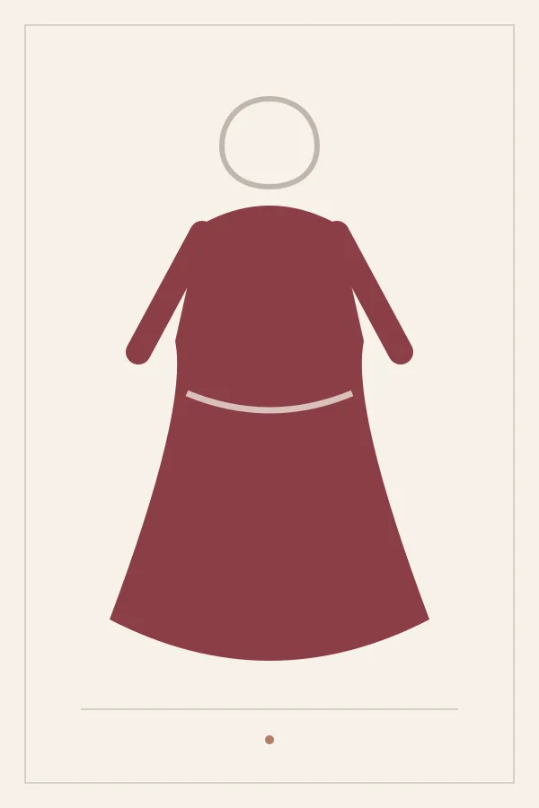
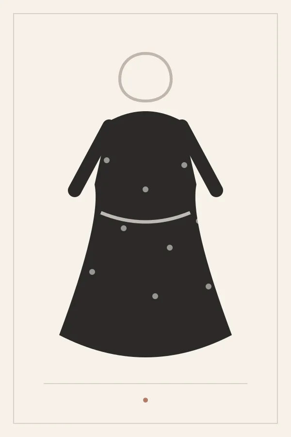
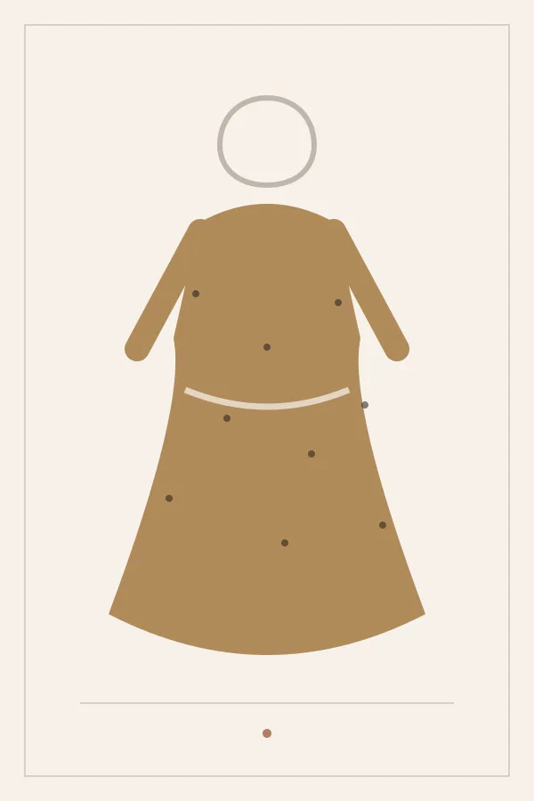
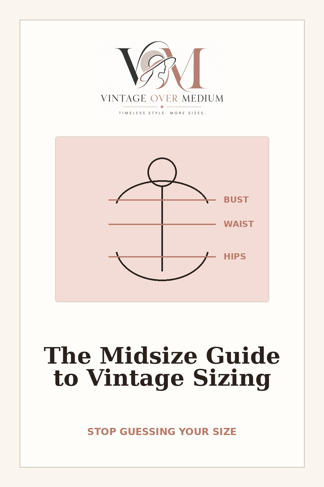

Bust
Measure around the fullest part of your chest, with the tape straight across your back.
Vintage sizes don't match your jeans. Here's how to shop retro without the return-label heartbreak.
Your measurements, a fill-in brand worksheet, and fit rules for every silhouette, on one page for your phone or fridge.
No spam. Unsubscribe anytime.
If you've ever tried on a real 1950s dress marked “16” and couldn't zip it, it's not you. Clothing sizes have shifted over the decades. Brands gradually made the number on the tag smaller for the same body, a practice known as vanity sizing. So a true vintage tag often reads several sizes larger than what you wear today.
Rule #1: ignore the number. Trust the tape measure.
| 1955 Size | Bust | Waist | Hips |
|---|---|---|---|
| 12 | 34 | 25.5 | 36 |
| 14 | 35.5 | 27 | 38 |
| 16 | 37 | 28.5 | 40 |
| 18 | 39 | 30.5 | 42 |
| 20 | 41 | 32.5 | 44 |
Historical reference only. Always check the measurements on the actual garment or the brand's own chart.
Actual clothing from the 1920s–1970s. One of a kind, and usually in small size ranges, because most surviving pieces are small.
New clothing made in retro cuts and modern sizes, often up to 4X and beyond. This is what we feature on this site.
Use a soft sewing tape, wear a light bra (the one you'd wear with the dress), and stand relaxed. Keep the tape snug, not tight, and parallel to the floor.
Measure around the fullest part of your chest, with the tape straight across your back.
Find the narrowest part of your torso, usually a little above your belly button. Bend to one side; the crease that forms is your natural waist. 1950s dresses are cut to sit here, not at your pants waistband.
Measure around the fullest part of your hips and seat. Stand with your feet together.
From the bump at the base of your neck down to your natural waist. It tells you whether a dress's waist seam will land where yours is.
Every brand sizes differently, and reproduction brands vary more than most. Always use the size chart on the product page, not a general guide (including this one).
When in doubt: size to the tightest part of the dress, then have a tailor take in the rest.
Size to: Bust and waist
The skirt is full, so your hips almost never matter. Add a petticoat for the classic shape.
Size to: Hips
Look for stretch fabric. A back vent or slit makes walking much easier.
Size to: Bust
If the buttons pull or gape across the chest, size up and belt the waist in.
Size to: Hips (then bust)
The waist is loose by design. The dropped seam should hit at your hip, not your widest point.
Fill this in as you shop. After a few brands you'll know your size everywhere.
| Brand | Size for my bust | Size for my waist | Size for my hips | My best size | Notes (stretch? runs small?) |
|---|---|---|---|---|---|
Important: This stays blank on purpose. Brand sizes should come straight from each brand's official size chart, with the date it was checked.
Get this worksheet and the fit rules as a one-page printable, plus new finds in sizes 12–24 when they drop.
No spam. Unsubscribe anytime.

Weddings, dinners, parties, and milestone moments in vintage style.
Shop the edit →
Full skirts, fitted waists, and pockets. The most flattering silhouette ever made.
Shop the edit →
Drop waists, fringe, and beading that moves when you do.
Shop the edit →Vintage is actually old; vintage-style is new clothing cut in retro shapes, usually in much wider size ranges.
Sizes have shifted smaller over the decades. Go by the measurements, not the tag number.
Size to the measurement that matters for that silhouette, then check the fabric for stretch.
No. They change the skirt's shape, not the bodice fit. Buy the dress to fit your bust and waist first.
